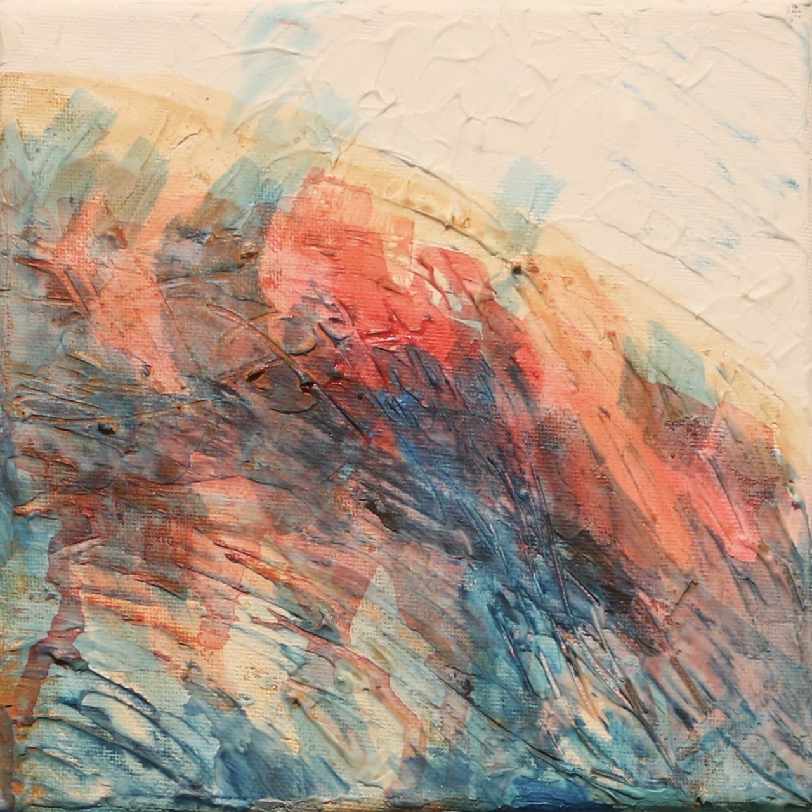

中原 菜海
なかはら なみ
美術家

わたしについて
1997年7月、千葉県柏市に生まれ、その後神奈川県横浜市で育つ。
４歳の頃に絵画教室へ通い始め、美術人生をスタートさせる。
高校在学中に立体的な造形感覚に惹かれ、彫刻を学び始める。
2024年現在、沖縄県立芸術大学美術工芸学部美術学科彫刻専攻４年次在学。
作品制作や展示発表に加え
ライブドローイングやワークショップなどの活動を通して、地域の人々との交流を図りながら芸術表現の楽しさと自由の喜びを伝えている。
グループ展
2021年10月 つづく展
2022年１月 オウライ展
2022年９月 夏のオアシス展
2022年11月 彫刻の五七五
2023年９月 夏のオアシス展 vol.２
2023年12月 彫刻の五七五
2024年２月 卒業作品展
2022年１月 オウライ展
2022年９月 夏のオアシス展
2022年11月 彫刻の五七五
2023年９月 夏のオアシス展 vol.２
2023年12月 彫刻の五七五
2024年２月 卒業作品展
略歴
2020年4月
沖縄県立芸術大学入学
2020年9月
令和2年度前期彫刻専攻・専修成果展
(沖縄県立芸術大学附属図書・芸術資料館/沖縄)
2021年2月
令和2年度後期彫刻専攻・専修成果展
2021年8月
令和3年度前期彫刻専攻・専修成果展
2021年10月
つづく展(ギャラリーACUOT/沖縄)
ギャラリーオープニングイベントにてライブドローイング
2022年1月
喜四萬弥・中原菜海二人展「オウライ展」
(沖縄県立芸術大学附属図書・芸術資料館/沖縄)
2022年2月
令和3年度後期彫刻専攻・専修成果展
2022年8月
令和4年度前期彫刻専攻・専修成果展
2022年9月
YuiArts主催「夏のオアシス展」(ギャラリーACUOT/沖縄)
ワークショップ「夏の思い出オブジェづくり」の企画・開催
2022年10月
浦添市立中央公民館アンチエイジングプロジェクト
「玄関掲示板に彩を」(浦添市中央公民館/沖縄)
県内の中高生対象を対象としたワークショップ
2022年11月
グループ展「彫刻の五七五－かたちで詠むティダカンカン－」
(那覇市民ギャラリー・キャンプタルガニー/沖縄)
2022年12月
グループ展「WithArtーアートとともにある未来を vol.2」
(パレットくもじ/沖縄)
2023年2月
令和4年度後期彫刻専攻・専修成果展
2023年8月
令和5年度前期彫刻専攻・専修成果展
2023年9月
「夏のオアシス展 vol.2」
(ギャラリーACUOT/沖縄)
2023年12月
グループ展「彫刻の五七五－かたちで詠むミーニシ吹く頃－」
(那覇市民ギャラリー/沖縄)
沖縄県立芸術大学入学
2020年9月
令和2年度前期彫刻専攻・専修成果展
(沖縄県立芸術大学附属図書・芸術資料館/沖縄)
2021年2月
令和2年度後期彫刻専攻・専修成果展
2021年8月
令和3年度前期彫刻専攻・専修成果展
2021年10月
つづく展(ギャラリーACUOT/沖縄)
ギャラリーオープニングイベントにてライブドローイング
2022年1月
喜四萬弥・中原菜海二人展「オウライ展」
(沖縄県立芸術大学附属図書・芸術資料館/沖縄)
2022年2月
令和3年度後期彫刻専攻・専修成果展
2022年8月
令和4年度前期彫刻専攻・専修成果展
2022年9月
YuiArts主催「夏のオアシス展」(ギャラリーACUOT/沖縄)
ワークショップ「夏の思い出オブジェづくり」の企画・開催
2022年10月
浦添市立中央公民館アンチエイジングプロジェクト
「玄関掲示板に彩を」(浦添市中央公民館/沖縄)
県内の中高生対象を対象としたワークショップ
2022年11月
グループ展「彫刻の五七五－かたちで詠むティダカンカン－」
(那覇市民ギャラリー・キャンプタルガニー/沖縄)
2022年12月
グループ展「WithArtーアートとともにある未来を vol.2」
(パレットくもじ/沖縄)
2023年2月
令和4年度後期彫刻専攻・専修成果展
2023年8月
令和5年度前期彫刻専攻・専修成果展
2023年9月
「夏のオアシス展 vol.2」
(ギャラリーACUOT/沖縄)
2023年12月
グループ展「彫刻の五七五－かたちで詠むミーニシ吹く頃－」
(那覇市民ギャラリー/沖縄)